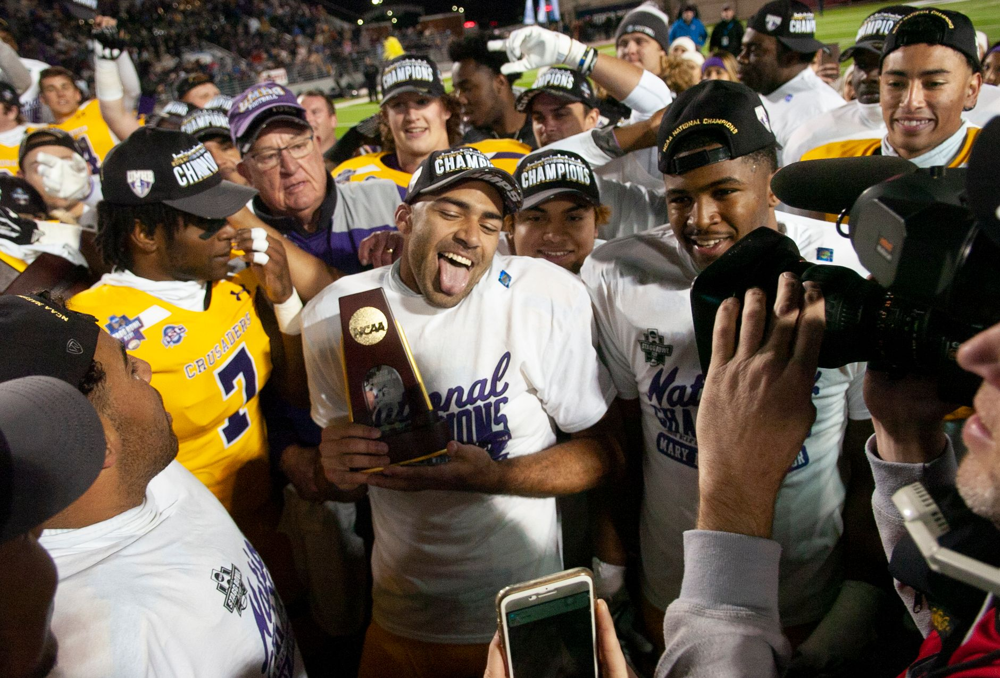

A historic victory for the brewers
The atmosphere in Milwaukee is nothing short of electric following the conclusion of the 2026 World Series. For years, fans have dreamed of seeing their team lift the Commissioner's Trophy, and that dream finally became a reality in spectacular fashion. The Brewers did not just win; they dominated the series, showcasing a level of depth and resilience that few teams in modern baseball history have ever displayed.
This victory marks a monumental shift in the landscape of Major League Baseball. While the franchise has had many talented rosters in the past, this specific group of players possessed a unique chemistry that allowed them to overcome even the most intimidating opponents. From the opening pitch of the series to the final out, the Brewers played with a sense of purpose that suggested they were destined for this moment.
The championship win is a testament to the organization's long-term vision. By focusing on homegrown talent and strategic veteran acquisitions, the front office built a roster capable of sustaining high-pressure performance throughout the entire season and into the deepest parts of the playoffs.
Key factors in the championship run
To understand how the Brewers managed to capture the title, one must look at the statistical dominance they displayed across several key categories. It was not just one player who carried the load, but rather a collective effort that stifled the opposition at every turn.
The pitching staff, in particular, deserves immense credit. During the World Series, the Brewers' rotation managed to limit the opponent to very few hard-hit balls, effectively neutralizing the most dangerous hitters in the league. This ability to control the tempo of the game allowed the offense to play with confidence, knowing that even a small lead could be defended.
The emotional weight of the moment
For the players, this victory is more than just a trophy; it is the culmination of thousands of hours of sacrifice and training. Interviews following the game revealed a sense of relief and overwhelming joy among the roster. Many players noted that the journey through the regular season was difficult, but the hardships only served to bond the team closer together.
We knew we had something special this year, but seeing it all come together on the biggest stage in sports is a feeling I cannot even put into words. This belongs to the city of Milwaukee.
The emotional connection between the team and its fanbase was evident as the celebration spilled out into the streets. The city has embraced this team as their own, and the championship victory serves as a shared triumph for an entire community that has stood by the team through both highs and lows.
Analyzing the series highlights
The series was defined by several high-leverage moments that could have swung the momentum in either direction. However, the Brewers seemed to thrive in these high-pressure situations. Every time the opposing team threatened to make a comeback, the Brewers responded with a decisive blow or a clutch defensive play.
The tactical decisions made by the coaching staff were also instrumental. Managing the bullpen and making timely substitutions kept the players fresh and ensured that the team was always positioned to win the next inning. This level of strategic mastery is often what separates champions from mere contenders.
Looking ahead to the future
While the celebration will last for weeks, the focus for the Brewers will eventually shift toward maintaining this level of excellence. The challenge for any championship team is to avoid complacency and continue building a roster that can compete at this elite level in the coming years.
The core of this championship team is young and talented, suggesting that a dynasty could be on the horizon for Milwaukee. With a solid foundation and a winning culture now firmly established, the organization is in an enviable position as they look toward the next season.
As we continue to cover the exciting world of baseball, we look back at other intense postseason battles that shaped the recent landscape. If you enjoyed the tension of this championship, you might want to revisit how the Rays Force Game 5 With Dramatic Walk-Off Victory to see how other teams have fought through similar high-stakes moments.
See Also
If you enjoyed this Baseball News article, check out Rays Force Game 5 With Dramatic Walk-Off Victory for more useful reading.